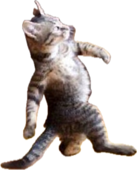

A cat named Yahiko wants to conquer humanity and the World. To accomplish that, he needs your help to score the maximum number of good coins. Let's play!
Instructions
- 1. Use the right and left arrow keys to move Yahiko
- 2. Press the up key to jump
- 3. Avoid coins, or you will lose life points
- 4. Collect as much as you can
 3
3